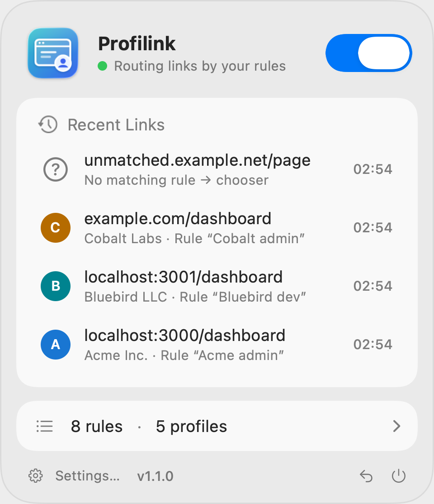
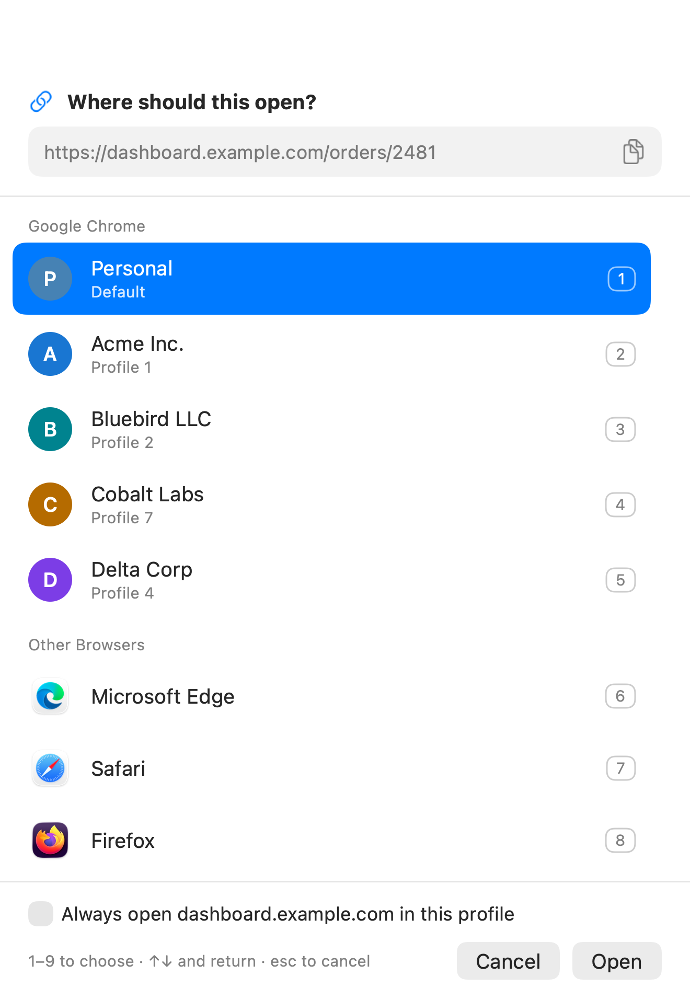

Link router for Mac · macOS 13+
If you keep a Chrome profile for each company or client, every link you click opens in whichever one you used last, and you end up signing in again. Profilink looks at the URL and opens it in the right browser and the right profile, automatically.
Signed with an Apple Developer ID and notarized by Apple · JPY 980, one time

Make Profilink your Mac’s default web browser and you are done. Links you click in Claude, Slack, Mail and elsewhere are routed by your rules.
Rules match by domain, by prefix, by regular expression, or everything. Ports count too, so localhost:3000 and localhost:3001 can open in different profiles.
Type a URL into the test box in Settings to see which rule it hits.
A rule can apply only to links clicked in particular apps. Use it on its own, or together with a URL rule.
Settings › History shows which app each link came from, and can turn it into a rule.
Links that match no rule open the chooser. 1–9 picks right away, ↑↓ and return also work, esc cancels.
Tick “Always open this domain here” and it becomes a rule.

Outlook and Teams Safe Links, and redirects from Google, Slack, Facebook and others, carry the real URL inside. Profilink checks that real URL, so your domain rules still work for links from company email.
Hold ⌥ while clicking a link to get the chooser even when a rule matches. Hold ⇧ to skip the rules and open it where you chose in Settings.
Any rule can open its links in a private (Incognito) window. Works with Chrome, Edge, Brave and Firefox.
Chrome, Microsoft Edge and Brave profiles are read automatically, with names, email addresses and pictures. Safari, Arc and Firefox work as destinations too.
The latest 500 links, the app each came from and where it opened, kept on this Mac only. Clear it or turn it off at any time.
Export your rules to a file and import them elsewhere, adding to or replacing what is there. You can also strip tracking parameters such as utm_ before opening.
JPY 980 one-time, tax included
Since the free trial lets you check everything, we do not normally refund purchases. Purchases are handled by a reseller acting as merchant of record.
Sales open soon. Until then, Profilink is free to use.
| macOS | macOS 13 (Ventura) or later |
|---|---|
| Mac | Apple silicon · Intel |
| Destinations | Google Chrome, Microsoft Edge, Brave (per profile), Safari, Arc, Firefox |
| Links it routes | Links clicked outside Chrome (Claude, Slack, Mail, Notes, Terminal and so on). Links clicked inside Chrome stay in Chrome. |
| Languages | English · 日本語 |
| Signing | Signed with an Apple Developer ID and notarized by Apple |
Questions and bug reports: info@tsubomi.jp. We reply in English or Japanese.